SDXL 対応 おすすめLoRA一覧
対応モデルごとに分類されたLoRA一覧です。各カテゴリーを選択してください。全 971 ファイル。
SDXL (43 items on this page / Total 43 items)
SDXL
キャラ
add-detail-xl
「add detail xl」を精密に再現する追加学習モデルです。Stable DiffusionのAI画像生成において、特徴的な容姿や表情をLoRAで安定させて描画。ハイクオリティな特定キャラ画像を生成したい方に最適です。
Size: 228,452,344

SDXL
キャラ
anal_cross-section_v1_sdxl
「anal cross section v1 sdxl」を精密に再現する追加学習モデルです。Stable DiffusionのAI画像生成において、特徴的な容姿や表情をLoRAで安定させて描画。ハイクオリティな特定キャラ画像を生成したい方に最適です。
Size: 228,450,548

SDXL
キャラ
anal_jelly_v1_sdxl
「anal jelly v1 sdxl」を精密に再現する追加学習モデルです。Stable DiffusionのAI画像生成において、特徴的な容姿や表情をLoRAで安定させて描画。ハイクオリティな特定キャラ画像を生成したい方に最適です。
Size: 228,450,692

SDXL
キャラ
backless_panties_v1_sdxl
「backless panties v1 sdxl」を精密に再現する追加学習モデルです。Stable DiffusionのAI画像生成において、特徴的な容姿や表情をLoRAで安定させて描画。ハイクオリティな特定キャラ画像を生成したい方に最適です。
Size: 228,453,660
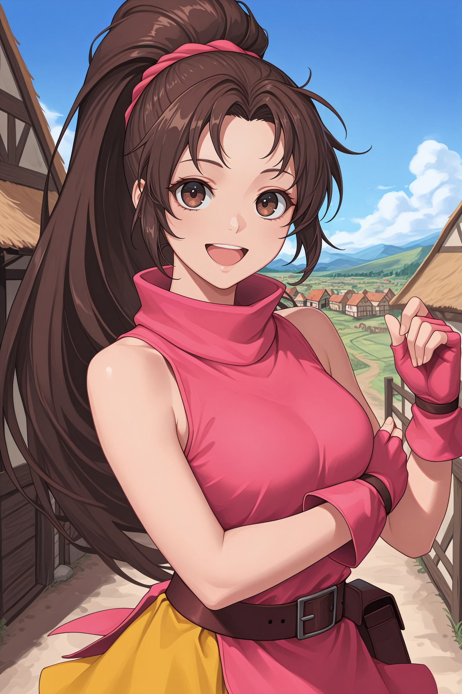
SDXL
キャラ
breast_padding_v1_sdxl
「breast padding v1 sdxl」を精密に再現する追加学習モデルです。Stable DiffusionのAI画像生成において、特徴的な容姿や表情をLoRAで安定させて描画。ハイクオリティな特定キャラ画像を生成したい方に最適です。
Size: 228,450,588

SDXL
その他
breast_sucking_tentacles_v1_sdxl
「breast sucking tentacles v1 sdxl」に特化した追加学習モデルです。Stable DiffusionでのAI画像生成にLoRAを導入し、特定要素の再現性を劇的に向上。効率的かつ高品質なビジュアルを求める全てのAI絵師必見のモデルです。
Size: 228,450,164

SDXL
衣装
clothes_in_front_v1_sdxl
「clothes in front v1 sdxl」の衣装を付与できる追加学習モデルです。Stable DiffusionのAI画像生成でLoRAを活用し、細部までこだわり抜いたデザインを固定可能。特定のコスチュームを手軽に再現したい時に重宝します。
Size: 228,450,700
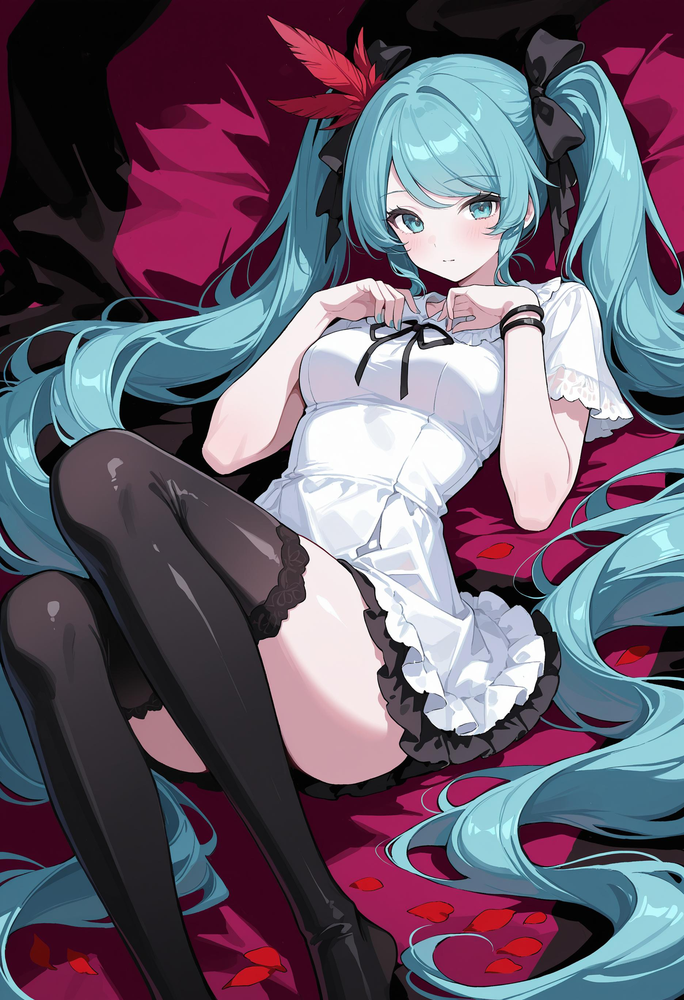
SDXL
キャラ
convenient_censoring_v1_sdxl
「convenient censoring v1 sdxl」を精密に再現する追加学習モデルです。Stable DiffusionのAI画像生成において、特徴的な容姿や表情をLoRAで安定させて描画。ハイクオリティな特定キャラ画像を生成したい方に最適です。
Size: 228,450,924
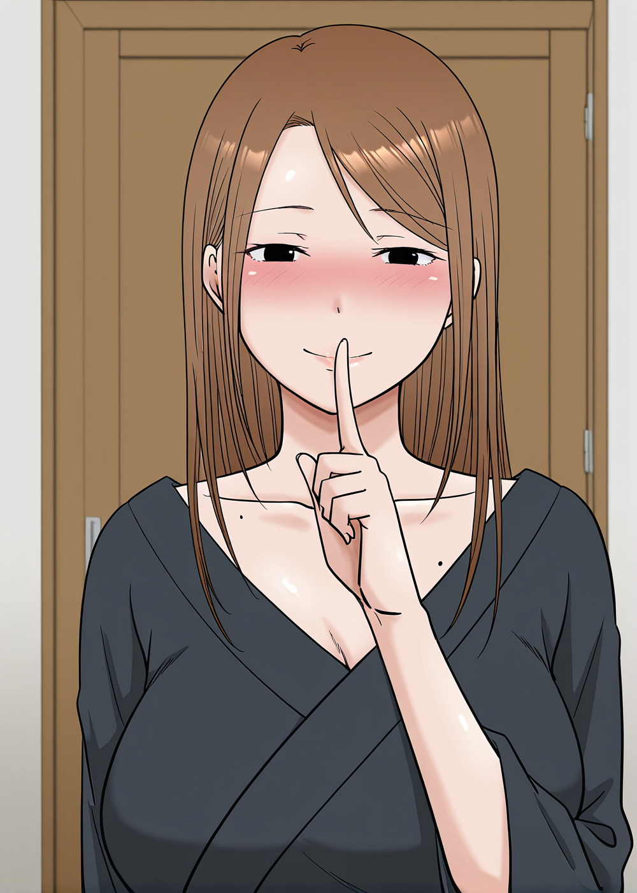
SDXL
キャラ
cum_in_ass_v1_sdxl
「cum in ass v1 sdxl」を精密に再現する追加学習モデルです。Stable DiffusionのAI画像生成において、特徴的な容姿や表情をLoRAで安定させて描画。ハイクオリティな特定キャラ画像を生成したい方に最適です。
Size: 228,450,580
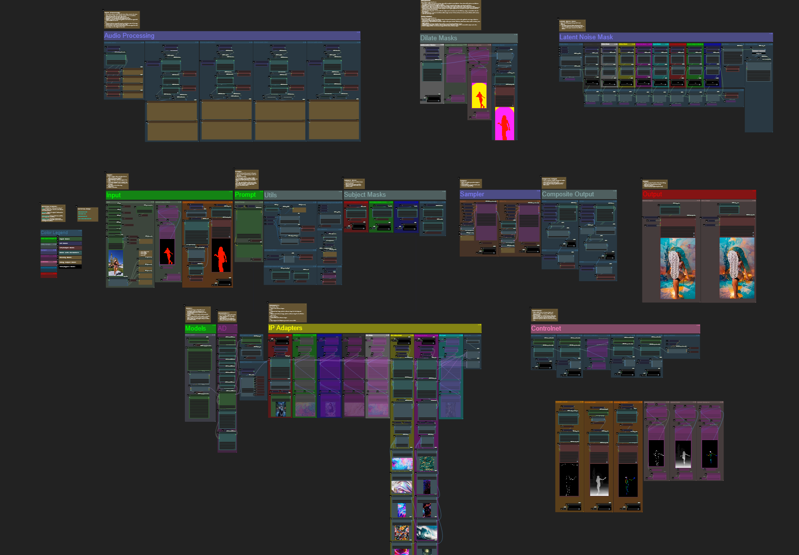
SDXL
キャラ
dilation_v1_sdxl
「dilation v1 sdxl」を精密に再現する追加学習モデルです。Stable DiffusionのAI画像生成において、特徴的な容姿や表情をLoRAで安定させて描画。ハイクオリティな特定キャラ画像を生成したい方に最適です。
Size: 228,450,524
SDXL
キャラ
dildo_reveal_v1_sdxl
「dildo reveal v1 sdxl」を精密に再現する追加学習モデルです。Stable DiffusionのAI画像生成において、特徴的な容姿や表情をLoRAで安定させて描画。ハイクオリティな特定キャラ画像を生成したい方に最適です。
Size: 228,450,532

SDXL
画風
Dreamyvibes artstyle SDXL - Trigger with dreamyvibes artstyle
「Dreamyvibes artstyle SDXL Trigger with dreamyvibes artstyle」の独特なタッチを反映する追加学習モデル。Stable DiffusionでのAI画像生成で、色彩や質感をLoRAにより一変させます。独創的で芸術性の高い作品を追求するクリエイターにおすすめです。
Size: 456,484,948
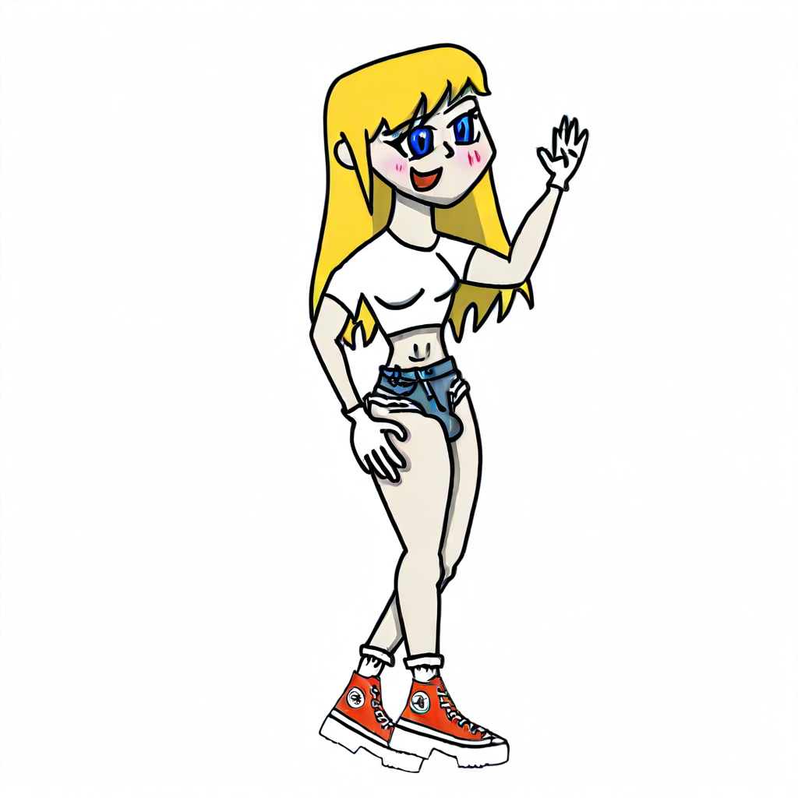
SDXL
キャラ
futanari_onaho_v1_sdxl
「futanari onaho v1 sdxl」を精密に再現する追加学習モデルです。Stable DiffusionのAI画像生成において、特徴的な容姿や表情をLoRAで安定させて描画。ハイクオリティな特定キャラ画像を生成したい方に最適です。
Size: 228,450,644
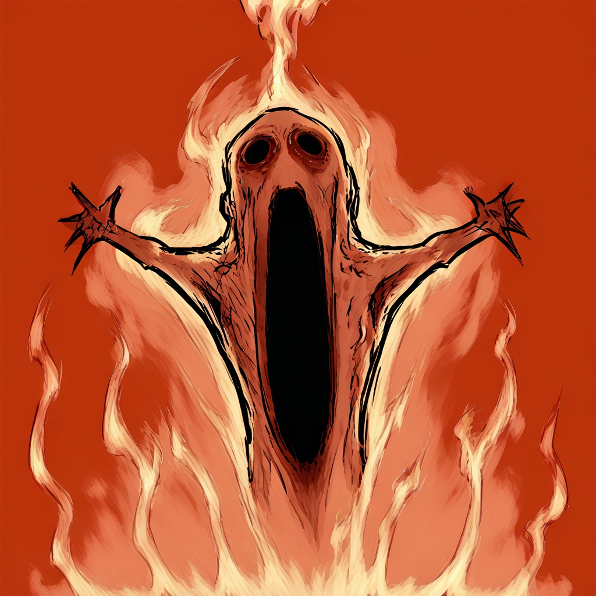
SDXL
キャラ
gaping_anus_v1_sdxl
「gaping anus v1 sdxl」を精密に再現する追加学習モデルです。Stable DiffusionのAI画像生成において、特徴的な容姿や表情をLoRAで安定させて描画。ハイクオリティな特定キャラ画像を生成したい方に最適です。
Size: 228,450,804
SDXL
キャラ
IconsRedmondV2-Icons
「IconsRedmondV2 Icons」を精密に再現する追加学習モデルです。Stable DiffusionのAI画像生成において、特徴的な容姿や表情をLoRAで安定させて描画。ハイクオリティな特定キャラ画像を生成したい方に最適です。
Size: 170,540,036
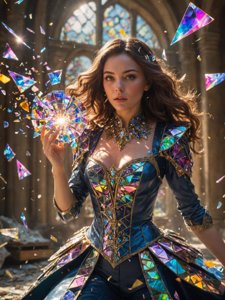
SDXL
キャラ
kaleidoshatter_xl_v1
「kaleidoshatter xl v1」を精密に再現する追加学習モデルです。Stable DiffusionのAI画像生成において、特徴的な容姿や表情をLoRAで安定させて描画。ハイクオリティな特定キャラ画像を生成したい方に最適です。
Size: 340,768,396
SDXL
画風
LineAniRedmondV2-Lineart-LineAniAF
「LineAniRedmondV2 Lineart LineAniAF」の独特なタッチを反映する追加学習モデル。Stable DiffusionでのAI画像生成で、色彩や質感をLoRAにより一変させます。独創的で芸術性の高い作品を追求するクリエイターにおすすめです。
Size: 170,540,028
SDXL
キャラ
Love_is_antinoice_XL
「Love is antinoice XL」を精密に再現する追加学習モデルです。Stable DiffusionのAI画像生成において、特徴的な容姿や表情をLoRAで安定させて描画。ハイクオリティな特定キャラ画像を生成したい方に最適です。
Size: 228,453,292
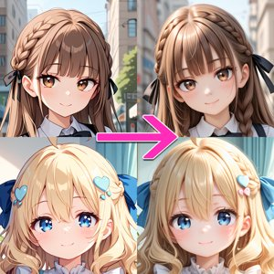
SDXL
キャラ
make25d_xl_v10
「make25d xl v10」を精密に再現する追加学習モデルです。Stable DiffusionのAI画像生成において、特徴的な容姿や表情をLoRAで安定させて描画。ハイクオリティな特定キャラ画像を生成したい方に最適です。
Size: 93,012,288
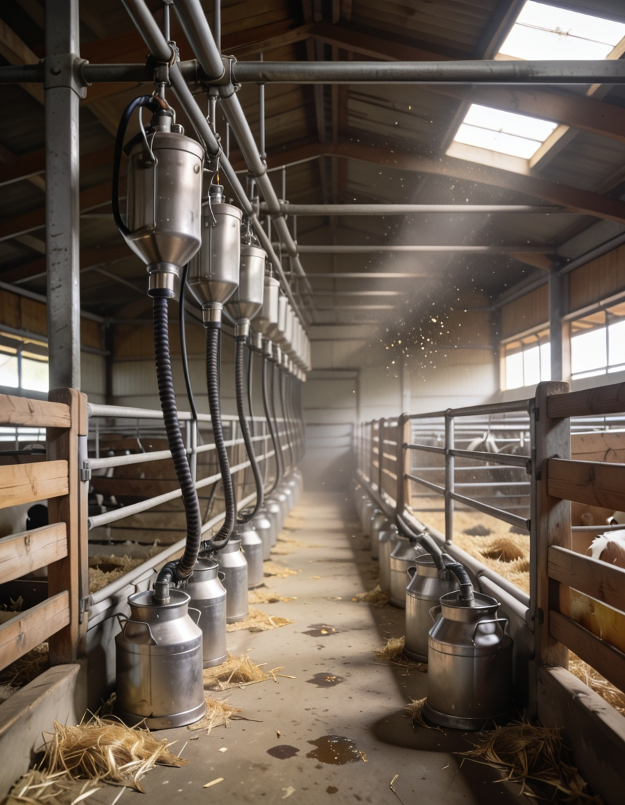
SDXL
キャラ
milking_handjob_v1_sdxl
「milking handjob v1 sdxl」を精密に再現する追加学習モデルです。Stable DiffusionのAI画像生成において、特徴的な容姿や表情をLoRAで安定させて描画。ハイクオリティな特定キャラ画像を生成したい方に最適です。
Size: 228,450,588

SDXL
キャラ
multiple_anal_v1_sdxl
「multiple anal v1 sdxl」を精密に再現する追加学習モデルです。Stable DiffusionのAI画像生成において、特徴的な容姿や表情をLoRAで安定させて描画。ハイクオリティな特定キャラ画像を生成したい方に最適です。
Size: 228,450,700

SDXL
キャラ
ofuda_maebari_v1_sdxl
「ofuda maebari v1 sdxl」を精密に再現する追加学習モデルです。Stable DiffusionのAI画像生成において、特徴的な容姿や表情をLoRAで安定させて描画。ハイクオリティな特定キャラ画像を生成したい方に最適です。
Size: 228,450,700
SDXL
キャラ
osamu_tezuka_xl_v1
「osamu tezuka xl v1」を精密に再現する追加学習モデルです。Stable DiffusionのAI画像生成において、特徴的な容姿や表情をLoRAで安定させて描画。ハイクオリティな特定キャラ画像を生成したい方に最適です。
Size: 340,768,396
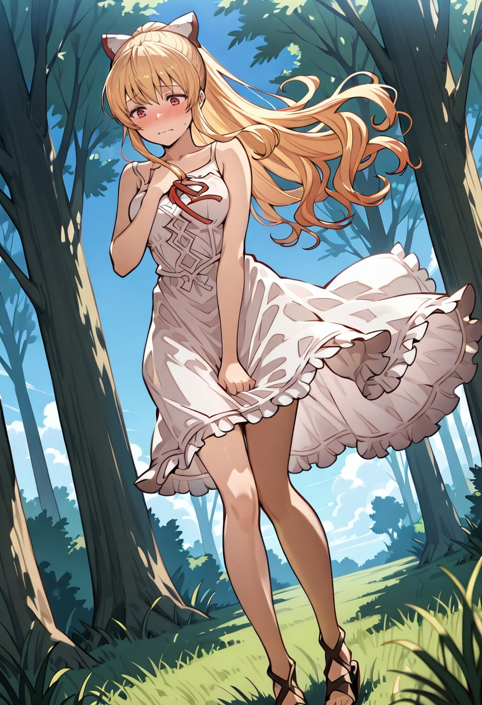
SDXL
キャラ
panties_around_leg_v1_sdxl
「panties around leg v1 sdxl」を精密に再現する追加学習モデルです。Stable DiffusionのAI画像生成において、特徴的な容姿や表情をLoRAで安定させて描画。ハイクオリティな特定キャラ画像を生成したい方に最適です。
Size: 228,451,084

SDXL
その他
pantyshot_through_reflection_v1_sdxl
「pantyshot through reflection v1 sdxl」に特化した追加学習モデルです。Stable DiffusionでのAI画像生成にLoRAを導入し、特定要素の再現性を劇的に向上。効率的かつ高品質なビジュアルを求める全てのAI絵師必見のモデルです。
Size: 228,450,724
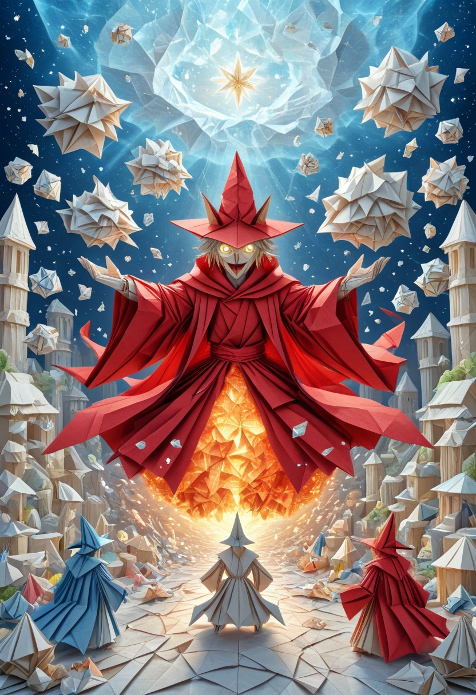
SDXL
キャラ
pastel-anime-xl-latest
「pastel anime xl latest」を精密に再現する追加学習モデルです。Stable DiffusionのAI画像生成において、特徴的な容姿や表情をLoRAで安定させて描画。ハイクオリティな特定キャラ画像を生成したい方に最適です。
Size: 197,245,728

SDXL
キャラ
pastel-anime-xl
「pastel anime xl」を精密に再現する追加学習モデルです。Stable DiffusionのAI画像生成において、特徴的な容姿や表情をLoRAで安定させて描画。ハイクオリティな特定キャラ画像を生成したい方に最適です。
Size: 197,087,480
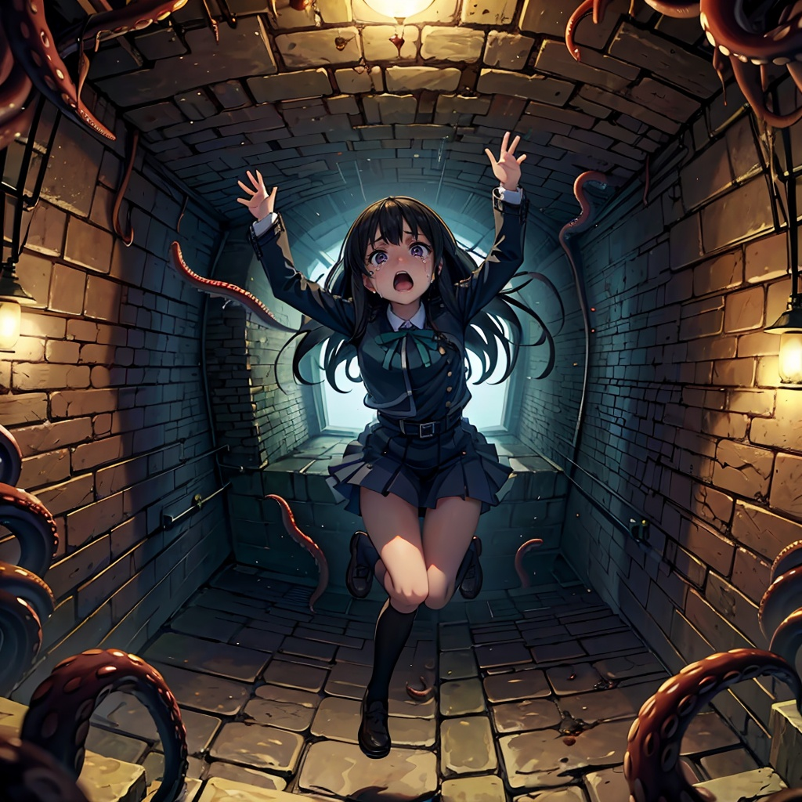
SDXL
キャラ
pitfall_v1_sdxl
「pitfall v1 sdxl」を精密に再現する追加学習モデルです。Stable DiffusionのAI画像生成において、特徴的な容姿や表情をLoRAで安定させて描画。ハイクオリティな特定キャラ画像を生成したい方に最適です。
Size: 228,450,636
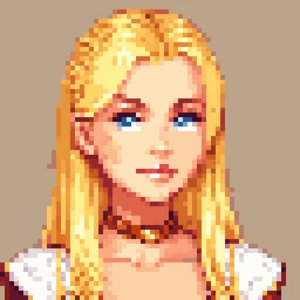
SDXL
画風
PixelArtRedmond-Lite64
「PixelArtRedmond Lite64」の独特なタッチを反映する追加学習モデル。Stable DiffusionでのAI画像生成で、色彩や質感をLoRAにより一変させます。独創的で芸術性の高い作品を追求するクリエイターにおすすめです。
Size: 170,540,052

SDXL
キャラ
popularity_contest_v1_sdxl
「popularity contest v1 sdxl」を精密に再現する追加学習モデルです。Stable DiffusionのAI画像生成において、特徴的な容姿や表情をLoRAで安定させて描画。ハイクオリティな特定キャラ画像を生成したい方に最適です。
Size: 228,450,276
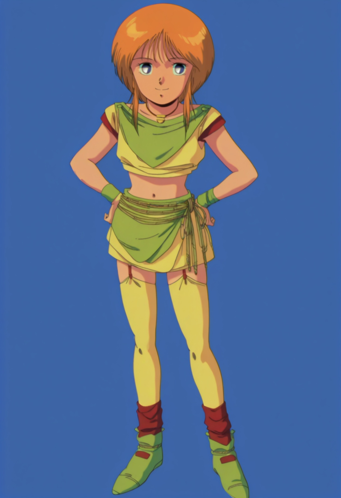
SDXL
キャラ
rope_walking_v1_sdxl
「rope walking v1 sdxl」を精密に再現する追加学習モデルです。Stable DiffusionのAI画像生成において、特徴的な容姿や表情をLoRAで安定させて描画。ハイクオリティな特定キャラ画像を生成したい方に最適です。
Size: 228,450,636
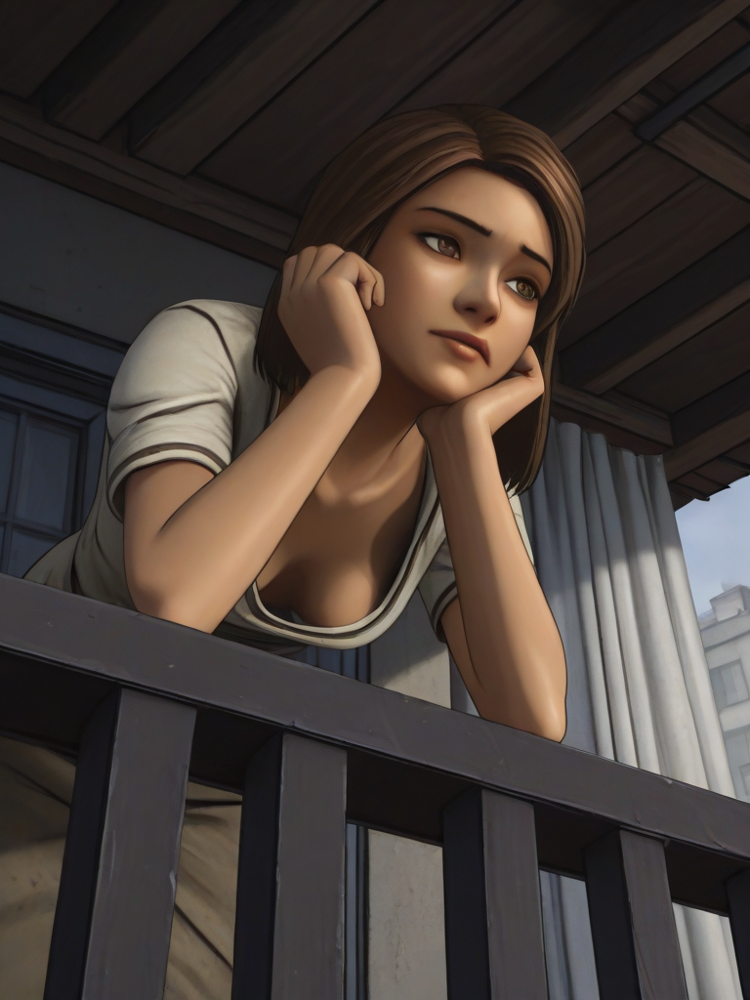
SDXL
その他
sex_from_behind_reflection_v1_sdxl
「sex from behind reflection v1 sdxl」に特化した追加学習モデルです。Stable DiffusionでのAI画像生成にLoRAを導入し、特定要素の再現性を劇的に向上。効率的かつ高品質なビジュアルを求める全てのAI絵師必見のモデルです。
Size: 228,450,564

SDXL
キャラ
spreader_bar_v1_sdxl
「spreader bar v1 sdxl」を精密に再現する追加学習モデルです。Stable DiffusionのAI画像生成において、特徴的な容姿や表情をLoRAで安定させて描画。ハイクオリティな特定キャラ画像を生成したい方に最適です。
Size: 228,450,804
SDXL
キャラ
stickersXL
「stickersXL」を精密に再現する追加学習モデルです。Stable DiffusionのAI画像生成において、特徴的な容姿や表情をLoRAで安定させて描画。ハイクオリティな特定キャラ画像を生成したい方に最適です。
Size: 340,803,756

SDXL
キャラ
sticky_anus_v1_sdxl
「sticky anus v1 sdxl」を精密に再現する追加学習モデルです。Stable DiffusionのAI画像生成において、特徴的な容姿や表情をLoRAで安定させて描画。ハイクオリティな特定キャラ画像を生成したい方に最適です。
Size: 228,450,588

SDXL
キャラ
through_wall_photo_v1_sdxl
「through wall photo v1 sdxl」を精密に再現する追加学習モデルです。Stable DiffusionのAI画像生成において、特徴的な容姿や表情をLoRAで安定させて描画。ハイクオリティな特定キャラ画像を生成したい方に最適です。
Size: 228,450,876
SDXL
キャラ
upside-down_v1_sdxl
「upside down v1 sdxl」を精密に再現する追加学習モデルです。Stable DiffusionのAI画像生成において、特徴的な容姿や表情をLoRAで安定させて描画。ハイクオリティな特定キャラ画像を生成したい方に最適です。
Size: 228,450,588

SDXL
キャラ
vore_head_v1_sdxl
「vore head v1 sdxl」を精密に再現する追加学習モデルです。Stable DiffusionのAI画像生成において、特徴的な容姿や表情をLoRAで安定させて描画。ハイクオリティな特定キャラ画像を生成したい方に最適です。
Size: 228,450,796
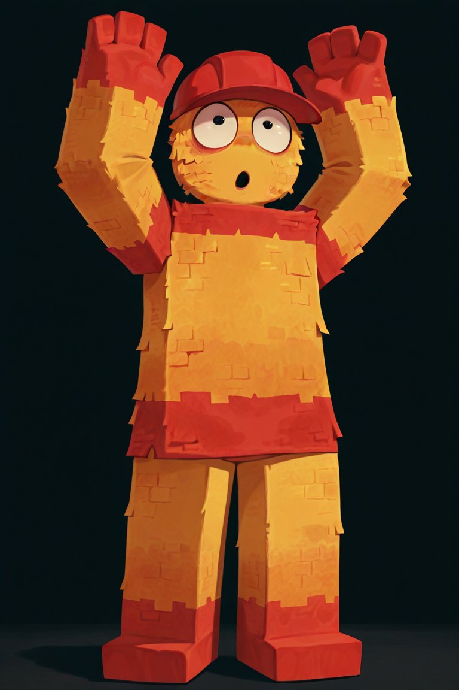
SDXL
画風
wall_(concept)_ILXL
「wall (concept) ILXL」の独特なタッチを反映する追加学習モデル。Stable DiffusionでのAI画像生成で、色彩や質感をLoRAにより一変させます。独創的で芸術性の高い作品を追求するクリエイターにおすすめです。
Size: 114,443,972
SDXL
その他
XL-ClaudiaConstanzi-ERONA-ILXL
「XL ClaudiaConstanzi ERONA ILXL」に特化した追加学習モデルです。Stable DiffusionでのAI画像生成にLoRAを導入し、特定要素の再現性を劇的に向上。効率的かつ高品質なビジュアルを求める全てのAI絵師必見のモデルです。
Size: 171,449,596
SDXL
その他
XL-Rossweisse-K-Melkvi-v2-ILXL
「XL Rossweisse K Melkvi v2 ILXL」に特化した追加学習モデルです。Stable DiffusionでのAI画像生成にLoRAを導入し、特定要素の再現性を劇的に向上。効率的かつ高品質なビジュアルを求める全てのAI絵師必見のモデルです。
Size: 171,449,708
SDXL
キャラ
XL-SakuragiMano-ILXL
「XL SakuragiMano ILXL」を精密に再現する追加学習モデルです。Stable DiffusionのAI画像生成において、特徴的な容姿や表情をLoRAで安定させて描画。ハイクオリティな特定キャラ画像を生成したい方に最適です。
Size: 152,101,516
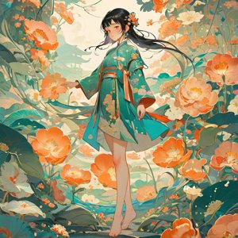
SDXL
キャラ
国风插画SDXL
「国风插画SDXL」を精密に再現する追加学習モデルです。Stable DiffusionのAI画像生成において、特徴的な容姿や表情をLoRAで安定させて描画。ハイクオリティな特定キャラ画像を生成したい方に最適です。
Size: 340,768,396